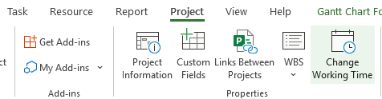
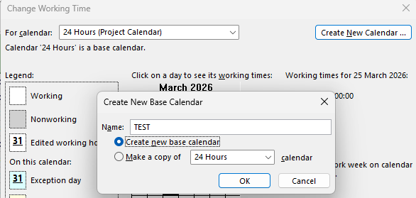
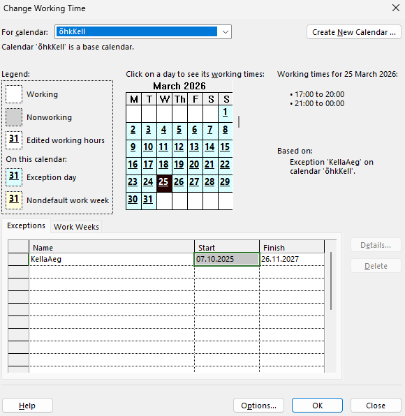
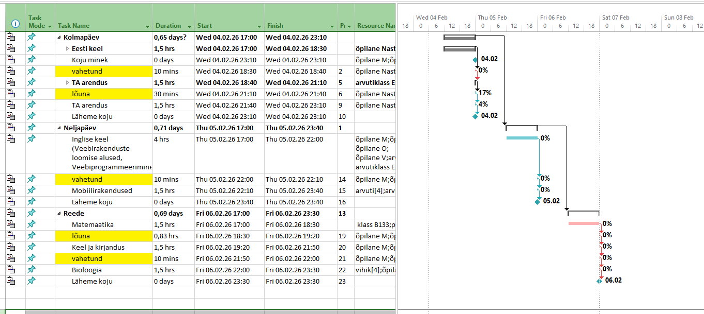

Oma kalender
kuidas luua kohandatud tööajakalender
Ava "Change Working Time"
Mine ülaribalt Project → klõpsa Change Working Time. See avab kalendri halduse akna, kus saad hallata kõiki projekti tööajakalendreid.

Loo uus baasikalender
Klõpsa New…, vali Create a new Base Calendar, anna sellele nimi (nt synncalendar) ja kinnita OK-ga. Uus kalender ilmub rippmenüüsse.

Vaata ja muuda tööaegu
Vali loodud kalender rippmenüüst. Kalendril on näha töö- ja puhkepäevad. Klõpsa kuupäeval, et näha, millised tunnid on tööajaks märgitud — näiteks 17:00–20:00 ja 21:00–00:00.

Määra kalender ülesandele
Tee ülesandel topeltklõps, et avada Task Information. Mine vahekaardile Advanced ja vali Task Calendar rippmenüüst oma äsja loodud kalender — nt synncalendar. See tähendab, et just see ülesanne arvestab sinu kohandatud tööajaga.

Tulemus Gantt-diagrammil
Pärast kalendri seadistamist arvestab ProjectLibre ülesannete kestust vastavalt uutele tööaegadele. Gantt-diagrammil näed ülesandeid täpsete kuupäevade ja kellaaegadega — näiteks 13.02.26 kuni 14.02.26.
